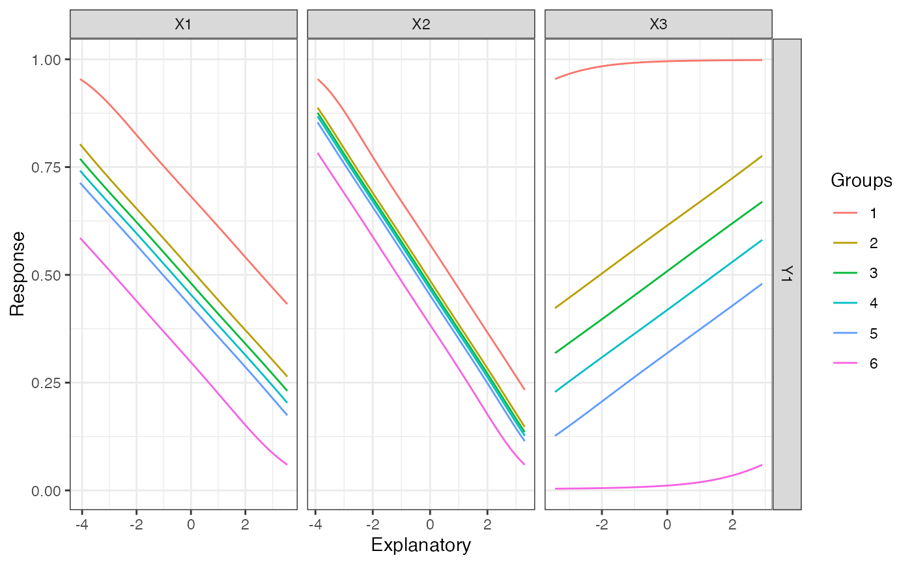

Conduct a sensitivity analysis of model responses in a neural network to input variables using Lek's profile method
lekprofile(mod_in, ...) # S3 method for default lekprofile(mod_in, xvars, ysel = NULL, xsel = NULL, steps = 100, group_vals = seq(0, 1, by = 0.2), val_out = FALSE, group_show = FALSE, grp_nms = NULL, position = "dodge", ...) # S3 method for nnet lekprofile(mod_in, xsel = NULL, ysel = NULL, ...) # S3 method for mlp lekprofile(mod_in, xvars, yvars, xsel = NULL, ysel = NULL, ...) # S3 method for train lekprofile(mod_in, xsel = NULL, ysel = NULL, ...) # S3 method for nn lekprofile(mod_in, xsel = NULL, ysel = NULL, ...)
| mod_in | input object for which an organized model list is desired. The input can be an object of class |
|---|---|
| ... | arguments passed to other methods |
| xvars |
|
| ysel | chr string indicating which response variables to plot if more than one, defaults to all |
| xsel | chr string of names of explanatory variables to plot, defaults to all |
| steps | numeric value indicating number of observations to evaluate for each explanatory variable from minimum to maximum value, default 100 |
| group_vals | numeric vector with values from 0-1 indicating quantile values at which to hold other explanatory variables constant or a single value indicating number of clusters to define grouping scheme, see details |
| val_out | logical value indicating if actual sensitivity values are returned rather than a plot, default |
| group_show | logical if a barplot is returned that shows the values at which explanatory variables were held constant while not being evaluated |
| grp_nms | optional chr string of alternative names for groups in legend |
| position | chr string indicating bar position (e.g., 'dodge', 'fill', 'stack'), passed to |
| yvars |
|
A ggplot object for plotting if val_out = FALSE, otherwise a two-element list is returned with a data.frame in long form showing the predicted responses at different values of the explanatory variables and the grouping scheme that was used to hold unevaluated variables constant.
The Lek profile method is described briefly in Lek et al. 1996 and in more detail in Gevrey et al. 2003. The profile method is fairly generic and can be extended to any statistical model in R with a predict method. However, it is one of few methods used to evaluate sensitivity in neural networks.
The profile method can be used to evaluate the effect of explanatory variables by returning a plot of the predicted response across the range of values for each separate variable. The original profile method evaluated the effects of each variable while holding the remaining explanatory variables at different quantiles (e.g., minimum, 20th percentile, maximum). This is implemented in in the function by creating a matrix of values for explanatory variables where the number of rows is the number of observations and the number of columns is the number of explanatory variables. All explanatory variables are held at their mean (or other constant value) while the variable of interest is sequenced from its minimum to maximum value across the range of observations. This matrix (or data frame) is then used to predict values of the response variable from a fitted model object. This is repeated for each explanatory variable to obtain all response curves. Values passed to group_vals must range from zero to one to define the quantiles for holding unevaluated explanatory variables.
An alternative implementation of the profile method is to group the unevaluated explanatory variables using groupings defined by the statistical properties of the data. Covariance among predictors may present unlikely scenarios if holding all unevaluated variables at the same level. To address this issue, the function provides an option to hold unevaluated variable at mean values defined by natural clusters in the data. kmeans clustering is used on the input data.frame of explanatory variables if the argument passed to group_vals is an integer value greater than one. The centers of the clusters are then used as constant values for the unevaluated variables. An arbitrary grouping scheme can also be passed to group_vals as a data.frame where the user can specify exact values for holding each value constant (see the examples).
For all plots, the legend with the 'Groups' label indicates the colors that correspond to each group. The groups describe the values at which unevaluated explanatory variables were held constant, either as specific quantiles, group assignments based on clustering, or in the arbitrary grouping defined by the user. The constant values of each explanatory variable for each group can be viewed as a barplot by using group_show = TRUE.
Note that there is no predict method for neuralnet objects from the nn package. The lekprofile method for nn objects uses the nnet package to recreate the input model, which is then used for the sensitivity predictions. This approach only works for networks with one hidden layer.
Beck, M.W. 2018. NeuralNetTools: Visualization and Analysis Tools for Neural Networks. Journal of Statistical Software. 85(11):1-20.
Lek, S., Delacoste, M., Baran, P., Dimopoulos, I., Lauga, J., Aulagnier, S. 1996. Application of neural networks to modelling nonlinear relationships in Ecology. Ecological Modelling. 90:39-52.
Gevrey, M., Dimopoulos, I., Lek, S. 2003. Review and comparison of methods to study the contribution of variables in artificial neural network models. Ecological Modelling. 160:249-264.
Olden, J.D., Joy, M.K., Death, R.G. 2004. An accurate comparison of methods for quantifying variable importance in artificial neural networks using simulated data. Ecological Modelling. 178:389-397.
## using nnet library(nnet) set.seed(123) mod <- nnet(Y1 ~ X1 + X2 + X3, data = neuraldat, size = 5)#> # weights: 26 #> initial value 259.012592 #> iter 10 value 0.986480 #> iter 20 value 0.225311 #> iter 30 value 0.139585 #> iter 40 value 0.098961 #> iter 50 value 0.038200 #> iter 60 value 0.022839 #> iter 70 value 0.013774 #> iter 80 value 0.008530 #> iter 90 value 0.005172 #> iter 100 value 0.003044 #> final value 0.003044 #> stopped after 100 iterationslekprofile(mod)if (FALSE) { ## using RSNNS, no bias layers library(RSNNS) x <- neuraldat[, c('X1', 'X2', 'X3')] y <- neuraldat[, 'Y1', drop = FALSE] mod <- mlp(x, y, size = 5) lekprofile(mod, xvars = x) ## using neuralnet library(neuralnet) mod <- neuralnet(Y1 ~ X1 + X2 + X3, data = neuraldat, hidden = 5) lekprofile(mod) ## back to nnet, not using formula to create model ## y variable must have a name attribute mod <- nnet(x, y, size = 5) lekprofile(mod) ## using caret library(caret) mod <- train(Y1 ~ X1 + X2 + X3, method = 'nnet', data = neuraldat, linout = TRUE) lekprofile(mod) ## group by clusters instead of sequencing by quantiles mod <- nnet(Y1 ~ X1 + X2 + X3, data = neuraldat, size = 5) lekprofile(mod, group_vals = 6) # six clusters ## enter an arbitrary grouping scheme for the group values ## i.e. hold all values at 0.5 group_vals <- rbind(rep(0.5, length = ncol(x))) group_vals <- data.frame(group_vals) names(group_vals) <- names(group_vals) lekprofile(mod, group_vals = group_vals, xsel = 'X3') }